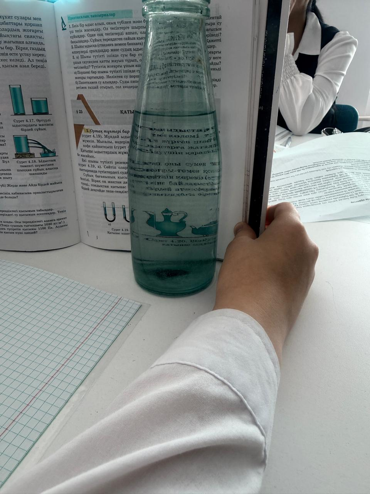

Үйдегі линза тәжірибесі | Шыны бөтелке + су
Линза тек зертханада емес. Ол — сіздің қолыңызда! Бүгін оқушылармен шыны бөтелке мен суды пайдаланып, линзаның кескін беру қасиетін тәжірибе арқылы бақылау.
Қажетті материалдар
- Мөлдір шыны бөтелке.
- Су.
- Ақ қағаз.
- Мәтіні бар парақ (газет/кітап).
- Күн сәулесі немесе фонарь.
Жасалу қадамдары
- Бөтелкені мөлдір суға толтырыңыз.
- Бөтелкенің артына мәтіні бар парақты қойыңыз.
- Бөтелке арқылы мәтінге қараңыз. Мәтіннің үлкейгенін және кейде төңкерілгенін байқайсыз!
- Фонарь немесе күн сәулесін бөтелке арқылы ақ қағазға бағыттаңыз. Қағазда жарық дағы — линзаның кескін беруін көрсетеді.
Бұл құбылыс қалай түсіндіріледі
- Суға толған цилиндрлі бөтелке — жинағыш линза сияқты әрекет етеді.
- Жарық су арқылы өткенде сынады.
- Сынған сәулелер бір нүктеге жиналады.
- Сондықтан кескін үлкейеді немесе төңкеріледі.

Қорытынды
Сәулені сындыруын, кескін беруін, үлкейту қасиетін өз көзімен көреді.